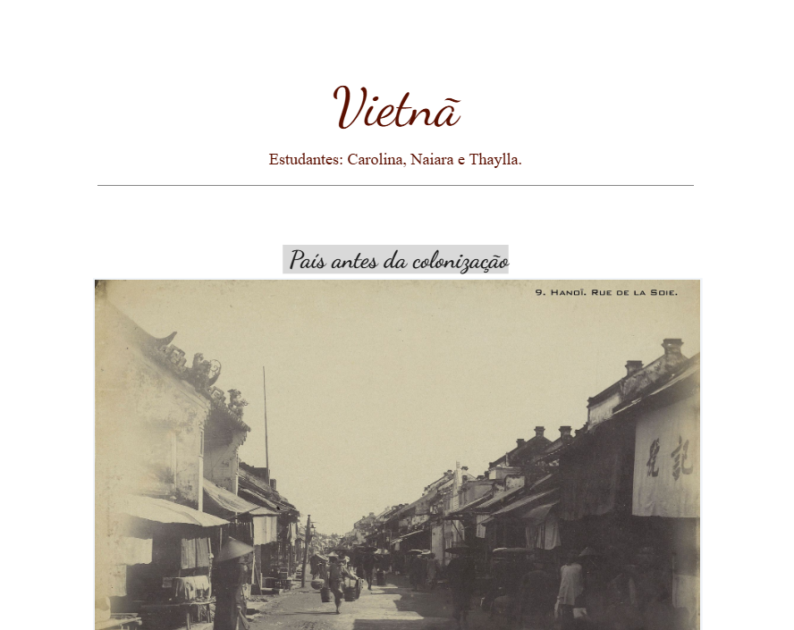

A atividade em anexo, consistiu na reflexão sobre os meios de comunicação durante o início do século XX e desenvolver uma capa de jornal semelhante à época. O nosso grupo escolheu o período ocorrido na França, em 1919, chamado Belle Époque.
Habilidades e Competências
Este trabalho teve como objetivo a pesquisa acerca dos países escolhidos por cada grupo para a realização de uma apresentação sobre os mesmos. O tema central gira em torno da geopolítica dos países, ou seja, dados e relações internacionais de cada um. O nosso grupo escolheu a Nova Zelândia e o Japão para serem abordados.
Habilidades e Competências
O nosso grupo escolheu o Vietnã como país a ser pequisado e realizar um documento apresentando a sua tragetória histórica, por meio de imagens, abordando desde sua colonização, mudanças na população, até a sua independência e situação atual.
Habilidades e Competências

Anexo
Esta é uma atividade de exemplo para o segundo trimestre. Substitua este texto pela descrição real do seu trabalho.
Habilidades e Competências

Esta é uma atividade de exemplo para o terceiro trimestre. Substitua este texto pela descrição real do seu trabalho.
Habilidades e Competências